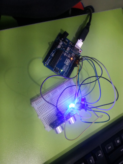
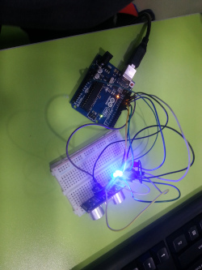

2015년~2016 대건정보처리학원, 2018~2020 코딩플러스학원에서 활동 하였으며, 학생들과의 교류와 친목, 공부하는 즐거움이 좋았던 시간이었습니다.
모바일 사용자 상황정보를 이용한 퍼스널 라이프로그 자동태깅 시스템
- 모바일 환경 기반에서 생성된 사용자의 상황정보를 가공하고 추론하는 방법을 연구하고 실험한 것을 기록한 석사학위논문
- 저자 : 장영완, 김병만
- 등재일 : 2014.8
- 등재학회 : 금오공과대학교 대학원
스마트폰 기반의 이동상황 판별을 위한 유클리디안 거리유사도의 응용
- 이동 컴퓨팅 환경에서의 사용자 움직임을 파악하기 위해 유클리디안 거리유사도를 이용하여 스마트폰의 센서를 통해 인식한 사용자의 움직임을 추상화 하는 방법
- 저자 : 장영완, 김병만, 장성봉, 신윤식
- 등재일 : 2014.8
- 등재학회 : 한국산업정보학회논문지 제19권 제4호
모바일 사용자 상황정보를 이용한 퍼스널 라이프로그 자동 태깅 방법
- 모바일 환경 기반에서 생성된 사용자의 상황정보를 가공하고 추론하여 일화형태의 레코드를 구성하고 대표값을 추출하여 태깅하는 것으로 일상의 정보를 수집하는 방법
- 저자 : 장영완, 김병만, 문창배, 신윤식
- 등재일 : 2013.10
- 등재학회 : 한국정보과학회논문지 시스템 및 이론 제40권 제5호
모바일 사용자 상황정보를 이용한 퍼스널 라이프로그 자동 태깅 시스템
- 모바일 환경 기반에서 생성되어 가공된 사용자 상황정보를 추론하여 일화형태이 레코드를 구성하고 대표값을 태깅하는 시스템
- 저자 : 장영완, 김병만, 신윤식
- 등재일 : 2013.6
- 등재학회 : 2013년 한국컴퓨터종합학술대회 논문집
음악의 분위기와 폭소노미 태그의 관계 분석
- 폭소노미에 사용되는 태그에 대하여 유사어, 태깅 레벨, 신조어 등의 문제를 해결하기 위해 음악의 분위기 강도 (Arousal과 Valence의 강도)를 음악의 내부태그로 활용하는 방법을 분석
- 저자 : 문창배, 김현수, 장영완, 김병만
- 등재일 : 2013.3
- 등재학회 : 감성과학 제16권 제1호
Sports Pro 21
- 스포츠 센터 POS및 CRM 관련 어플리케이션 개발 운영 프로젝트 (한국마사회, 한성기업 르네상스휘트니스, 삼부스포렉스등 다수)
- 수행역할 : 프로그램 개발 및 유지보수 (VB, MS-SQL)
- 참여기간 : 2011.2 ~ 2011.9
- 소속기관 : (주)에픽소프트
DMS (Design Management System)
- 한국전력 고압단가 업체 운영 및 유지보수 설계 프로그램 개발 및 운영 프로젝트
- 수행역할 : 프로그램 운영 및 유지보수 (VC++, MS-SQL, Oracle)
- 참여기간 : 2006.12 ~ 2009.2
- 소속기관 : (주)혜만테크
 
